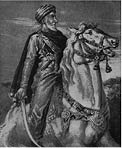

Bir Selçuklu sultanının ölümü, çoğu kez tüm olumlu gidişata ani bir darbe, devletin dahili ve harici düşmanlarının, ellerine geçen fırsatları değerlendirebileceği bir çatışma ve belirsizlik süreci anlamına geliyordu. Hasan Sabbah’ın ölümüyle birlikte pek çok kimse, onun kurduğu İsmaili emirliğinin de dönemin Müslüman hükümetlerinin yaşadığı bu süreçlerden geçeceği beklentisine kapılmış olmalıdır.
1126 senesinde Buzurg-Ümid’in tahta geçmesinden iki yıl sonra, Sultan Sencer bu beklentiyi sınamak için bir saldırı başlatmıştır. Sencer, 1103 senesinde Tabes’e düzenlediği seferden sonra İsmaililere karşı herhangi bir harekete girişmediği gibi, onlarla bir çeşit uzlaşmaya bile varmış olabilir.1126 tarihli İsmaili saldırısını açıklayabilecek herhangi bir casus belli (Latince savaş nedeni. E.n.) bilinmemektedir. Sultanın kendine güveninin artmış olması ve hükümdar değişikliğinin İsmailileri güçten düşürmüş olabileceğine dair oluşan kanaat, Sencer’in, imparatorluğun sınırlarının hemen ötesinde ve hatta yer yer sınırları dahilinde varlığını sürdüren bu bağımsız güce artık tahammül göstermeme kararı için geçerli bir açıklama sayılabilir. Sultanın sert eylemler yanlısı veziri Muineddin Kaşi de bu kararın alınmasında önemli rol oynamıştır. Görünüşe bakılırsa ilk saldırı doğuda gerçekleştirilmiştir. “O sene vezir, İsmaililere karşı savaş açılmasını, onların görülüp kuşatıldıkları yerde derhal öldürülmelerini, mülklerinin yağmalanmasını ve kadınlarının köleleştirilmesini emretti. Ellerinde bulunan Turaysis’e (Kühistan’da bir yer) ve Nişapur vilayetindeki Beyhak’a bir ordu gönderdi. İsmaililere ait olan her yere askerlerini konuşlandırarak onlara, karşılarına çıkan hiçbir İsmaili’yi sağ bırakmamaları emrini verdi.”63
Görülüyor ki İsmaililer, Müslümanlar arasındaki savaşlarda İslam hukukunun esirlere ve sivillere tanıdığı haklardan mahrum bırakılmışlar ve ölmeye ya da esir düşmeye mahkum kafirler muamelesine maruz kalmışlardır. Arap vakanüvis iki zaferden söz etmektedir: İnsanlarının kılıçtan geçirildiği ve liderlerinin cami minaresinden atlayıp intihar ettiği, Beyhak yakınlarındaki bir İsmaili köyü olan Tarz’ın fethi ve askerlerin ‘pek çok insan öldürüp pek çok ganimet toplayarak döndükleri’ Turaysis saldırısı. Açıktır ki seferin başarısı sınırlı kalmış ve nihai hedeflere ulaşılamamış, saldırganlar kuzeyde daha da büyük bedeller ödemek zorunda kalmıştır. Şirgir’in yeğeni liderliğinde Rudbar’a düzenlenen bir keşif seferi püskürtülmüş ve kendilerinden yüklü miktarda haraç kesilmiştir. Yöre halkının desteğiyle düzenlenen bir diğeri de bastırılmış ve kumandanlardan biri esir alınmıştır.
İsmaililerin intikamı fazla gecikmemiştir. Uşak kılığına girerek vezirin maiyetine sızmış iki fedainin maharetleri ve dindarlıklarını ortaya koyuşları vezirin takdirini kazanmıştı. Vezirin Nevruz dolayısıyla sultana hediye olarak göndereceği iki Arap atını seçmek üzere ikisini de huzuruna çağırmasıyla, bekledikleri fırsata kavuştular. Cinayet 16 Mart 1127 tarihinde gerçekleşti. “Onlarla mücadelesinde değerli çabalar gösterdi ve kahramanca savaştı” demişti İbnü’l Esir, “ve Allah onu şehitlikle mükafatlandırdı.”64Yine aynı tarihçinin kayıtlara geçmiş olduğu, Sencer’in Alamut’a misilleme olarak düzenlemiş olduğu bir başka seferde on binin üzerinde İsmaili katledilmiştir. İsmaili kaynaklarında veya başka bir kaynakta izine rastlanmaması itibariyle bu hadisenin kurmaca olması da muhtemeldir.
Aradaki husumetler sona erdiğinde İsmaililer eskisine nazaran daha da güçlü bir konumdaydı. Rudbar’da Meymündiz65 adında yeni ve sağlam bir kale inşa ederek buradaki mevzilerini güçlendirmişler ve bilhassa da Talikan’ı ele geçirerek topraklarını genişletmişlerdir. İsmaili kuvvetleri 1129 senesinde doğuda, tahminen Kühistan üzerinden Sistan’a saldırmıştır. Aynı yıl, İsfahan’daki Selçuklu Sultanı Mahmud barış için müzakereleri başlatmayı yararlı görmüş, Alamut’tan bir elçiyi görüşmeye davet etmiştir. Ne yazık ki elçi, yanında bir diğer elçiyle beraber sultanın huzurundan ayrıldıktan hemen sonra İsfahan halkı tarafından linç edilmiştir. Sultan özürlerini bildirmiş ve hadiseyle bir alakasının bulunmadığını iletmişse de doğal olarak Buzurg-Ümid’in katillerin cezalandırılması talebini geri çevirmiştir. İsmaililer misilleme olarak Kazvin’e saldırmış, kendi vakayinamelerine göre dört yüz kişiyi katletmiş ve yüklü miktarda ganimet toplamışlardır.66 “Kazvinliler karşı koymaya çalışmışlarsa da” diyor İsmaili vakanüvis, “refiklerin bir Türk emirini katletmesiyle birlikte geriye kalanlar arkalarına bakmadan kaçıp gitmiştir.” Bu tarihlerde, Mahmud’un komutasında Alamut’a düzenlenmiş olan bir saldırı da başarısızlıkla sonuçlanmıştır.67
1131’de Mahmud vefat edince kardeşleri ve oğulları arasında alışık olduğumuz taht kavgaları kaldığı yerden devam etti. Emirlerinden birkaçı Sultan Mesud’a karşı Bağdat halifesi el Müsteşrid’le ittifaka girmişse de 1139 senesinde halife, veziri ve çok sayıda yüksek rütbeli adamıyla birlikte Hemedan yakınlarında Mesud tarafından tutsak edildi. Sultan, bu kıymetli esirleri Meraga’ya götürmüş ve denildiğine göre burada kendilerine saygıda kusur edilmemişti, ancak bir grup İsmaili’nin kampa sızıp halifeyi öldürmesine de engel olmamıştı. Sünni İslam’ın lideri titriyle bir Abbasi halifesi, fırsatı yakaladıklarında suikastçıların hançerleri için kaçırılmayacak bir hedefti,fakat söylentiler, Mesud’u bu işte bizzat parmağı olmak ya da suikasta göz yummuş olmakla itham ediyor, unvan itibariyle halen Selçuklu hükümdarları üzerinde bir nüfuzu olan Sencer’i ise azmettirici olmakla suçluyordu. Cuveyni, her iki ismi de bu ithamlardan kurtarmak için epey uğraşmıştır:
“Sencer hanedanına husumet besleyen bazı basiretsiz kimseler, bu hareketten Sencer ve Mesud isimlerini sorumlu tutmuşlardır. Lakin, ‘Kabe’nin Rabbi şahittir ki müneccimler yalan söylemişlerdir!’
Sultan Sencer’in iyi huyluluğu ve saf mizacı, Hanefi inancına ve şeriata olan bağlılığından ve sunduğu destekten bellidir, halifeliğe olan hürmeti ve halifeye beslediği merhameti ve şefkati de onun hoşgörünün ve vicdanın kaynağı olan kişiliğine isnat edilen ithamların ne denli asılsız olduğunun ispatıdır.” 68
Halifenin ölüm haberi Alamut’ta sevinçle karşılandı. Yedi gün yedi gece süren kutlamalarda refiklere övgüler düzülürken Abbasilerin isimlerine ve sembollerine sayılıp sövüldü.
Buzurg-Ümid devrinde İran’da işlenmiş olan suikastların sayısı hiç de az olmamakla birlikte eski dönemlere göre azalmıştı. Halifenin yanı sıra, Isfahan valisi, halifenin şehri ziyaretinden az evvel öldürülmüş olan Merega valisi, bir Tebriz valisi ve bir Kazvin müftüsü bulunuyordu.
Suikastların sıklığındaki azalma, yalnızca İsmaili emirliğinin tabiatındaki bir değişimden ibaret değildir.
Hasan Sabbah’ın aksine Buzurg-Ümid bir yabancı değil Rudbar’ın yerlisiydi; Hasan’ın halk içinde kışkırtmacılık tecrübesini yaşamamış, yaşamının büyük bölümünü bir hükümdar ve idareci olarak geçirmiştir. Topraklarının tek hakimi olma rolüne soyunması ve bunun başkalarınca da kabullenilişi, İsmaililerin eski ve korkulan düşmanı Yarankuş’un, Harezmşah’ın büyüyen gücü karşısında maiyetiyle birlikte Alamut’a uçarcasına kaçışıyla çarpıcı bir şekilde gözler önüne serilmektedir. Şah, emiri, Yarankuş’un düşmanı İsmaililerin dostu olmakla itham ederek teslim olmasını istemiş fakat Buzurg-Ümid, “himayem altına sığınmış olan hiç kimseye düşman muamelesi edemem”69 cevabını vererek şahın bu talebini geri çevirmiştir. Buzurg-Ümid döneminin İsmaili vakanüvisleri, devrimci bir liderden ziyade, şövalye ruhlu bir hükümdar portresini yansıtan benzer alicenaplık hikayelerini keyifle anlatmaktadır.
İsmaili hükümdarı, dinden saptığı ithamlarıyla karşılaşma raddesine gelene dek bu tavrını korumuştur. “1131 yılında,” diyor İsmaili vakanüvis, “Deylem’de Ebu Haşim isminde bir Şii ortaya çıkarak Horasan’a kadar mektuplar gönderir. ‘BuzurgÜmid, kendisine dikkatini Allah’ın delillerine çekmeye yönelik bir mektup göndermişti.’ Ebu Haşim’in cevabıysa; ‘Sizin söylediğiniz düpedüz imansızlık ve küfürdür. Buraya gelirseniz de oturup tartışırsak inancınızın ne kadar yanlış açıkça görürsünüz’ olmuştur. Bunun üzerine İsmaililer Haşim’in üzerine bir ordu yollamış ve onu bozguna uğratmışlardır.
Ebu Haşim’i kıskıvrak yakaladılar, kendisine kafi miktarda delil gösterdikten sonra da onu yaktılar.”70
Buzurg-Ümid’in uzun süren hükümdarlık dönemi 9 Şubat 1138 tarihindeki vefatıyla sona ermiştir. Cüveyni, ağdalı bir dille bu durumu şöyle ele alır:
“Buzurg-Ümid, kabir azabının ayakları altında çiğnenip cesedinin cehennemin ateşine yakıt olduğu 26 Cemaziyülevvel 532 (9 Şubat 1138) gününe dek, cehaletin tahtında oturup günahın hükümdarlığını yapmıştır.”71
Kendisinden sonra, ölümüne yalnızca üç gün kala veliaht ilan etmiş olduğu oğlu Muhammed’in olaysız bir biçimde başa geçmiş olması, İsmaili liderliğinin tabiatındaki değişimde önemli bir etken olmuştur. “Buzur-Ümid öldüğünde,” diyor İsmaili vakanüvis, “düşmanları büyük bir neşeye ve küstahlığa büründüler”.72 Lakin çok geçmeden umutlarının boşa çıkacağının farkına varacaklardı.
Yeni hükümdarın ilk kurbanı bir diğer Abbasi; kendisi de bir cinayete kurban gitmiş olan el Müsterşid’in oğlu ve halefi, eski halife el Raşid idi. El Raşid, tıpkı babası gibi Selçukluların kavgalarına karışmış ve bizzat sultanın toplamış olduğu kadılar ve fakihler tarafından resmi bir biçimde görevden alınmıştı. El-Raşid bunun üzerine müttefikleriyle buluşmak için Irak’tan İran’a geçti ve İsfahan’da geçirdiği bir hastalığın iyileşme döneminde, 6 Temmuz 1138 günü suikastçılarının eline düştü. Katiller kendi maiyetindeki Horasanlılardı. Bir halifenin daha öldürülüşü Alamut’ta büyük bir sevinçle karşılandı ve yeni hükümdarın ilk ‘zafer’i şerefine kutlamalar yapıldı.73
Döneminde işlenmiş olan on dört suikastın hepsinde de Muhammed’in hükümdarlığına duyulan hürmetin rolü büyüktür. Halifenin dışında en kayda değer kurban, Suriyeli dört suikastçı tarafından 1143 senesinde Tebriz’de katledilmiş olan Selçuklu Sultanı Davud olmuştur. Söylentilere göre, suikastın azmettiricisi topraklarını Suriye içlerine doğru genişletmekte olan ve Davud’un kendisinin yerini almasından korkan Musul hükümdarı Zengi idi. Kuzeybatı İran’da gerekleşmiş olan bir cinayetin, buranın hemen yanı başındaki Alamut’ta değil de ta Suriye’de planlanmış olması oldukça düşündürücüydü. Diğer kurbanlar arasında, Sencer’in sarayından bir emir ve emirin bir dostu, Harezmşah hanedanından bir emir, Gürcistan ve Mazenderan’dan yerel yöneticiler, bir vezir ve bizzat İsmaililerin öldürülmesini emretmiş ya da azmettirmiş olan Kahistan, Tiflis ve Hemedan kadıları bulunmaktaydı.
Hasan Sabbah’ın ihtişamlı zamanıyla karşılaştırıldığında oldukça sönük görünen bu dönem, İsmaililerin iç ve bölgesel sorunlara karşı giderek artan ilgisini yansıtmaktaydı. Dönemin İsmaili vakayinamelerinde de bu sorunlara oldukça fazla yer verilmiştir. İmparatorluğa dair büyük meselelere nadiren değinilirken komşu hükümdarlarla girişilen yerel çatışma hikayeleri, ganimet olarak alınan ineklerin, koyunların, sıpaların ve diğer ganimetlerin tek tek sayılarına dek en ince ayrıntısına kadar anlatılmıştır. İsmaililer, bir dizi saldırı ve karşı saldırı sürecinde, Rudbar ve Kazvin arasındaki hatta tutunmalarının ötesinde, 1143 yılında Sultan Mahmud’un Alamut’a düzenlemiş olduğu bir saldırıyı da savuşturmuştur. Hazar bölgesinde birkaç yeni kale ele geçirmeyi ve inşa etmeyi başardıkları gibi, faaliyetlerini iki ana bölgeye; saldırılar düzenleyip propaganda yürüttükleri Gürcistan’a ve bazı sebeplerle bir dai göndermeleri için bizzat hükümdarı tarafından davet edilmiş oldukları bugünün Afganistan topraklarına genişletmiş oldukları da kayıtlara düşülmüştür. Ancak davet eden hükümdarın 1161’deki vefatı üzerine yerine geçen halefi, hem daileri hem de dinlerinden döndürmüş oldukları kimseleri öldürtmüştür.
Bilhassa iki düşmanın; Mazenderan hükümdarı ve idaresindeki şehirde yaşayan İsmailileri katledip İsmaili topraklarına saldırılar düzenlemiş olan Rey’in Selçuklu Valisi Abbas’ın varlığı kalıcı olmuştur. Her ikisinin de katletmiş oldukları İsmaililerin kafataslarından kuleler dizmiş oldukları anlatılmıştır. 1146 veya 1147 senesinde, bir Bağdat ziyareti sırasında Abbas, bir vakanüvisin aktardığına göre, ‘Sultan Sencer’den gelen bir işaretle’74 Sultan Mesud tarafından öldürülmüş kellesi Horasan’a gönderilmiştir. Zaman zaman, Sencer’in Kühistan’daki İsmail merkezlerinden birinde Sünni inancını yeniden canlandırma girişimleri sırasındaki gibi çatışmalar çıkmış olsa da İsmaililerle Sencer’in aynı saflarda yer aldıklarına dair bu tarz pek çok hadiseye rastlanmaktadır. Diğer yerlerde de olduğu gibi burada da söz konusu meseleler genelde yerel ve bölgeseldir. Ayrıca Almut’un dışındaki diğer İsmaili kalelerinde ve malikanelerinde liderliğin babadan oğula geçmesi ve ihtilafların da genellikle hanedanlığa dair meselelerden çıkmış olması kayda değerdir.
İsmaililerin ihtirası sönmüş gibi görünmektedir. İsmaili prenslikleriyle Sünni monarşiler arasındaki fiili açmaz hali ve zımnen de olsa birbirlerinin varlıklarını kabullenmişlikleri çerçevesinde, eski düzeni yıkıp yerine gizli imam şahsında yeni bir sistem kurmayı hedeflemiş büyük bir mücadele zamanla sınır kavgalarına ve hayvan yağmalarına dönüşmüştür. Zamanında Sünni imparatorluğuna darbeyi vuracak hücumların mızrak başı olarak tasarlanmış müstahkem kaleler, İslam tarihinde hiç de yabancısı olmadığımız bir biçimde yerel tarikat hanedanlıklarının ana merkezleri olmuşlardır. İsmaililer kendi darphanelerini dahi kurup kendi paralarını basmışlardır. Fedailerin bir yandan cinayetlerine devam ettikleri de doğrudur ancak bu yalnızca fedailere has bir eylem olmaktan çıkmış ve müminlerin içindeki umut ateşini beslemeye yetmez olmuştu.
İsmaililerin aralarında hâlâ Hasan Sabbah döneminin ihtişamlı günlerini; onun eski mücadelelerindeki adanmışlığı, maceracı ruhu ve tüm bunlara esin kaynağı olmuş dini inancını özlemle ananlar bulunuyordu. Bu kimseler, Alamut’un efendisi olan Muhammed yerine onun oğlu ve varisi olan Hasan’ı lider olarak benimsediler. Hasan’ın liderlik merakı erken yaşta başlamıştı.
“Hasan, aklı selim sahibi olmaya başladığı yaşlardan itibaren, Hasan Sabbah’ın ve atalarının öğretilerini okuyup anlamaya karşı içinde büyük bir istek duymuş ve itikatlarını yorumlamada büyük başarı kazanmıştı. Müthiş hitabet gücü sayesinde büyük bir kesimin saygınlığını kazanmıştı. Babasının her zaman eksikliğini duyduğu bu konuda onu tamamlayan bir alim olmuş, bu sayede halkı da arkasına almıştı. Babasından bu tarz sözler işitmemiş olan kalabalıklar onu Hasan Sabbah tarafından müjdelenen imam saymışlardı. Halkın Hasan’a olan bağlılığı böylelikle giderek arttı ve insanlar onun safına geçebilmek için adeta yarışa girdiler.”
Bu durum elbette Muhammed’in hiç hoşuna gitmemişti. Muhafazakar bir İsmaili inancına sahip olan Muhammed, imam lehinde propaganda faaliyetlerinin yürütülmesi ve Müslümanlık pratiklerinin yerine getirilmeleri bağlamında, babası ve Hasan Sabbah tarafından ortaya koyulmuş ilkelere uymada katı bir tutum sergilemiş ve oğlunun davranışlarının bu ilkelere ters düştüğünü düşünmüştür. Bu sebeple halkına seslendiği bir konuşmasında oğlunu ihbar edercesine şu sözleri sarf etmiştir: “Bu Hasan benim oğlumdur ve ben de imam değil, yalnızca onun dailerinden biriyim. Bu sözlerimi duyup da onlara inanan her kimse, o bir kafir ve Allahsızdır.” Ve bu sebeplerle Muhammed, oğlunun İmam olduğuna inanan kimseleri her türlü işkence ve azapla cezalandırmış, hatta bir seferinde iki yüz elli kişiyi Alamut surlarından aşağı arttırmış ve cesetlerini aynı cezaya çarptırdığı kimselerin sırtlarına bağlatarak onları da aşağı attırmıştır. Böylelikle Hasan’ın taraftarları korkup sinmişlerdir.75 Hasan ise sabırla bekleyerek babasının şüphelerini dağıtmayı başarmış, Muhammed 1162 senesinde vefat edince hiçbir muhalefetle karşılaşmadan onun yerine geçmiştir. Bu sırada Hasan yaklaşık otuz beş yaşındaydı.
Hasan’ın hükümdarlığının olaysız geçen ilk zamanlarındaki en belirgin değişim, kendisinden önce Alamut’ta sürdürülmekte olan, şeriat hükümlerinin katı bir biçimde uygulanması geleneğine son verilişidir. Tahta geçişinden iki buçuk sene sonra da Ramazan ayının ortasında saadet devrini ilan etmiştir.
Hadiseleri konu alan İsmaili anlatıları, tarikatın sonraki literatüründe muhafaza edilmiş olduğu gibi, üzerinde bazı değişiklikler yapılmak suretiyle, Alamut’un düşüşünü takiben İran vakayinamelerine de aktarılmıştır. Burada ilginç bir öykü anlatılmaktadır: 26 Ramazan 559 (8 Ağustos 1164) günü, Başak Burcu yükselişe geçmiş ve Güneş, Yengeç Burcu’ndayken, Hasan, Alamut’un avlusuna, yüzü batıya bakan ve dört köşesinde beyaz, kırmızı, sarı ve yeşil renklerde dört sancak dalgalanan bir kürsü dikilmesini emretmişti. Önceden Alamut’a davet etmiş olduğu kimseler avluda; doğudan gelenler sağ tarafta, batıdan gelenler sol tarafta ve kuzeyden, Rudbar ve Dey-lem’den gelenler ise ön tarafta, kürsünün hemen karşısında toplanmışlardı. Kürsünün yüzü batıya dönük olduğundan kalabalığın sırtı Mekke’ye dönüktü. “Sonra,” diye anlatılıyor bir İsmaili risalesinde, “Öğlene doğru, Efendi (Hasan) üzerinde beyaz bir entari ve beyaz bir sarıkla kaleden aşağı indi, bir işaretiyle kalabalığı susturarak sağ taraftan kürsüye yaklaştı ve zarif bir edayla kürsüye çıktı. Daha sonra, önce Deylemilere sonra sağdakilere ve en son da soldakilere olmak üzere üç kez selamlarını sundu. Bir an yere çömeldi ve hemen ardından doğrulup kılıcı havada, gür bir sesle konuşmaya başladı. ‘Alemlerin sakinlerine, cinlere, insanlara ve meleklere hitaben, gizli imamdan kendisine yeni tavsiyelerle dolu bir mesaj geldiğini ilan etti.’ Zamanımızın İmam’ı size hayır dualarını ve rahmetini gönderdi ve sizlerden ‘özel seçilmiş hizmetkarları’ olarak bahsetti. Sizi şeriatın katı kurallarından azat etti ve ‘Kıyamete’ ulaştırdı. Ayrıca İmam, Buzurg Ümid’in oğlu Muhammed, Hasan’ı ‘vekil, dai ve delil’ olarak ilan etti. Bizler de hem dini hem dünyevi meselelerde onun izinden gitmeli, onun emirlerini görev, sözünü sözümüz bilmeliyiz.”76 Konuşmasını tamamladıktan sonra Hasan kürsüden indi ve iki rekat bayram namazını kıldı. Ardından kurulan sofraya misafirler oruçlarını açmak üzere davet edildi ve bayram kutlamaları yapıldı. Doğuya ve batıya bu mutluluk dalgalarını yaymak üzere elçiler yollandı. Kühistan’da Müminabad Kalesi’nin komutanı, Alamut’taki kutlamaların aynısını düzenledi ve onunkinin tersi yöne bakan bir kürsüden kendini Hasan’ın vekili ilan etti: ‘Ve kafirlerin yuvası olan Müminabad’da bu rezaletlerin ortaya çıktığı sırada, insanlar arp ve ney çalarak kürsünün etrafında alenen şarap içiyorlardı.”77Haberlerin Suriye’ye de ulaşmasıyla, davaya bağlı olanlar şeriatın sona ermesini kutladılar.
Mekke’ye sırtlarını çevirmiş topluluklar ve oruç tutulduğu sırada verilen öğleden sonra ziyafeti gibi resmi ve törensel ihlaller, İslam’da dönem dönem tekrarlanan bir saadet devri ve sapkınlık temayülünün zirvesine tekabül ediyor ve Hristiyanlık’la açıkça paralellikler sergiliyordu. Şeriat, vazifesini yerine getirmiş ve miadını doldurmuş; sırlar ifşa olunmuş ve İmam’ın rahmeti üstün gelmişti. İnananlarını kendi seçtiği hizmetkarları ilan ederek günahkar olmaktan kurtarmış; Kıyamet’i ilan ederek ölümden korumuş ve onları, yaşarken, hakikatin bilgisinden olma bir Cennet’e ve ilahi özün tefekkürüne taşımıştı. ‘Şimdi, bu abes itikadın özü dünyayı yaratılmamış, zamanı sınırsız ve kıyameti maneviyat kabul eden filozofların peşinden gitmek olmuş. Cennet ve cehennemi bu kavramlara manevi bir mana kazandıracak şekilde tarif etmişler. Ve bu temellere dayanarak kıyametle birlikte insanoğlunun Allah’a kavuşacağını ve yaradılışa dair tüm sırların ve hakikatin ortaya çıkacağını, bu dünyada her şey yapılıp hesabı verilmeyeceği, öbür dünyadaysa yapılanların hesabının verileceği için itaat denen şeyin de ortadan kalkacağını söylemişlerdir. Ve bu bütün dinlerde ve inanışlarda vaat edilmiş ve beklenmekte olan manevi Kıyamet, tam da Hasan’ın bildirmiş olduğu şeydir. Bütün bunların sonucu olarak insanlar şeriatın şart koştuğu hükümlerden azat olmuşlardır çünkü Kıyamet’in bu evresinde her bakımdan tam anlamıyla Allah’a yönelebilmek için dini hukukun buyrukları ve geleneksel ibadet alışkanlıklarıyla meşgul olmayı bırakmaları gerekmekteydi. Şeriat hükümlerince insanların günde beş kez Allah’a ibadet etmeleri ve O’nun huzuruna çıkmaları emredilmekteydi. Bu yalnızca şekli bir buyruktu, oysa kıyametin yaşandığı şu günlerde müminler gönüllerinde her daim Allah’la beraber olmalı ve ruhlarının yüzü daima İlahi Varlık’ın yönüne çevrili olmalıydı, zira gerçek ibadet buydu. 78
Yeni idare, Alamut’un hakiminin konumunda da önemli bir değişikliğe yol açmıştır. Kale avlusundaki törende, imamın vekili ve canlı hüccet olarak Kıyamet’in habercisi olması itibariyle İsmaili eskatolojisinde (insanlığın nihai kaderi veya dünya tarihinin sonuçlandıran olayları inceleyen teoloji dalı. ç.n.) üstün bir şahsiyet sayılan kaim olarak kabul edildi. Reşidüddin’in dediğine göre Hasan, halka yaptığı konuşmadan sonra, görünüşte Buzurg-Ümid’in torunu olarak bilinse de gizli gerçeklikte zamanının İmam’ı ve Nizar’ın soyundan gelen önceki İmam’ın oğlu olduğunu beyan ettiği el yazmalarını çevreye dağıtmıştır. Bazı kimselerin öne sürmüş olduğu üzere Hasan, Kıyamet döneminde önemini yitirmeye başlamış olan Nizar’la arasında bir kan bağı değil de manevi bir bağ olduğunu iddia etmekteydi. Elbette ki ilk İslami Mehdilik hareketlerinde bu türden, Hz. Muhammed’in ailesiyle arasında manevi veya kan bağına dayalı bir akrabalık olduğuna dair iddiaları ileri süren kimselere rastlanmaktadır. Bu kimseler arasındaki ikamenin neye göre mümkün olduğuna dair çeşitli rivayetler halen bulunmakla birlikte, sonraki dönemlerde İsmaili geleneğini sürdürenler arasında Hasan’ın ve torunlarının Nizar’ın gerçek soyundan geldiğine dair sıkı bir mutabakat söz konusu olmuştur. Hasan’ın şahsına özel bir hürmet gösterilmiş ve kendisi daima Hasan, ismi selametle anılan manasına gelen “Hasan ala zikrihi’s-selam” tabiriyle anılmıştır. İsmaililerin büyük bölümü yeni idareyi kolayca benimsemiştir. Bir grup kimse, şeriatın boyunduruğundan kurtarılmış olmaya itiraz etmişse de Hasan bu kimseleri zalimce yöntemlerle cezalandırarak bağımsızlığını zorla kabul ettirmiştir.
“Hasan, gerek üstü örtülü gerekse açık beyanlar aracılığıyla, tıpkı şeriat döneminde dinin kurallarını bilip de uygulamayanların recm cezasına çarptırıldığı gibi, şimdi de şeriat hükümlerini benimseyip de bu hükümlerin şart koştuğu fiili ibadetleri sürdürmekte ısrar edenlerin recm cezasına çarptırılacağını dikte etmişti.”79
İsyankarlar arasında, soylu bir Deylemi sülalesinden gelen Hasan’ın kayınbiraderi de yer almaktaydı. Cüveyni’ye göre bu şahıs, dindarlığın ve dinin kalbinin derinliklerine sinmiş olduğu kimselerden biriydi. “Bu adam, o yüz kızartıcı günahların daha fazla yayılmasına göz yumamamıştı. Allah’ın rahmeti onun üzerine olsun! 6 Rebi-yülevvel 561 (9 Ocak 116) günü, Lemeser Kalesi’nde, yoldan çıkaran lider Hasan’ı bıçakladı ve onu ‘Allah’ın alev alav yanan gazap ateşine’ gönderdi.”80
Hasan’ın yerine tahta geçen on dokuz yaşındaki oğlu Muhammed de babasının, dolayısıyla kendisinin de Ni-zar’ın ve imamların soyundan geldikleri iddiasını sürdürmüştür. Üretken bir yazar olduğu söylenen Muhammed’in uzun süren hükümdarlık devrinde Kıyamet öğretisi geliştirilmiş ve genişletilmiş, ancak görünüşe bakılırsa dış dünya üzerindeki tesiri oldukça zayıf kalmıştır. Dirilişin, Alamut’ta geçen dönemine zamanın Sünni tarih yazınında hiç değinilmemiş olması ve ancak Alamut’un yıkılışından sonra İsmaili yazmalarının Sünni alimlerinin eline geçişiyle ortaya çıkması da dikkat çekici bir diğer nokta olmuştur.
II. Muhammed devri siyasi açıdan da olaysız geçmiştir. Alamut’un adamları komşularına saldırmayı sürdürmüş ve fedailer Bağdat halifesinin bir vezirini katletmişler, bunlar dışında önemli bir hadise görülmemiştir. Reşidüddin ve diğer bazı yazarların aktarmış olduğu bir hikayede Fahreddin Razi adındaki büyük bir Sünni ilahiyatçının bahsi geçmektedir. Fahreddin Razi, Rey’de ilahiyat öğrencilerine verdiği derslerde İsmaili inanışlarını çürütmeye ve yermeye bilhassa çaba göstermiştir.
Bunu duyan Alamut’un efendisi gidişata bir son vermek üzere fedailerinden birini Rey’e göndermiştir. Burada kendisini bir öğrenci olarak tanıtan fedai, yedi ay süreyle Fahreddin Razi’nin derslerine günü gününe katılmış ve nihayet karmaşık bir meseleyi tartışma bahanesiyle hocasıyla odasında baş başa kalma fırsatını elde etmiştir. Fedai, bıçağını bir hamlede çekerek Razi’ye doğrultmuştur.
Fahreddin Razi yana doğru sıçrayarak, ‘Ne istersin be adam?’ diye bağırmış. Fedai şöyle cevap vermiş: ‘Zat-ı alinizin karnını göğsünden göbeğine yarmak istiyorum çünkü kürsünüzden bizlere küfürler yağdırmaktasınız.’
Bir cebelleşmenin ardından fedai Razi’yi yere sererek göğsünün üzerine çökmüş. Dehşete kapılan ilahiyatçı tövbe etmiş ve bundan sonra o tarz sözlerden sakınacağına yemin etmiş. İkna olmaya meyilli fedai, Razi’nin kendisini affettirebilmek için sunduğu üç yüz altmış beş altın dinar dolu keseyi kabul etmiş. Uzlaşmacılığının karşılığı olarak da her sene kendisine aynı miktardaki dinarın ödenmesini talep etmiş. O günden sonra, Fahreddin Razi, İslami tarikatlar üzerine verdiği derslerde İsmaililer aleyhinde tek kelime etmemeye büyük özen göstermiş. Bu değişikliği fark eden öğrencilerden biri kendisine bunun sebebini sorduğunda hoca ona şöyle yanıt vermiş: ‘İsmaililer’e sayıp sövmek hiç de akıl kârı bir iş değildir, zira karşılığında onlardan alacağınız cevap son derece ağır ve şiddetli olabilir.’81 Hikayede masalsı öğeler ağır basmaktadır ancak şunu da belirtmek gerekir ki, Fahreddin Razi yazılarında İsmaili öğretilerini benimsemese de bir Sünni ilahiyatçıyı İsmaililerin öğretilerini yanlış bilgiler ve fanatik görüşlerle çürütmeye çalışmakla itham ederken, bir diğeriniyse bir İsmaili metnini doğru bir biçimde alıntıladı diye övmekten geri durmamıştır.82 Fahreddin Razi, şüphesiz, İsmaililerin haklı olduğu görüşünde değildi ancak ilahiyat bağlamındaki tartışmaların, doğru bilgiye ve karşıt görüş sahibinin bakış açısına dair zekice bir kavrayışa dayanması gerektiğini savunmaktaydı.
Bu esnada, İslam coğrafyasının doğu topraklarında ciddi siyasi değişimler meydana gelmekteydi. Bir süredir Sünni İslam birliğini sağlamış ve birliğin davasının bir kez daha sağlamasını almış olan Büyük Selçuklu Devleti dağılma sürecine girmiş, yerine Selçuklu prenslerinin ve subaylarının yanı sıra Orta Asya’dan Ortadoğu’ya göç dalgalarının sürüklemiş olduğu, sayıları giderek artan göçebe Türkmen boylarının şeflerinin önderliğinde yeni beylikler türemiştir. Gelinen nokta itibariyle Türklerin yayılması en geniş sınırlarına ulaşmış bulunuyordu; Selçuklu imparatorluk yapısı yerle bir olmuştu ancak Türklerin çevreye sızmaları ve sömürgeleştirme hareketleri, halihazırda başarılmış bir fethi derinleştirip güçlendirmek suretiyle devam etmekteydi. Rejim değişiklikleri özde hiçbir değişim yaratmamış; iktidara gelen prensler dini ortodoksiye sıkı sıkıya bağlılıkları da dahil olmak üzere, Selçuklulardan miras kalan siyasi, askeri ve idari gelenekleri olduğu gibi sürdürmeyi daha kolay bulmuşlardı. Türklerin küçük azınlıklar halinde bulunduğu yerlerde İranlı, Kürt veya Arap kökenli yerel topluluklar başkaldırarak bir ölçüde bağımsızlıklarını kazanmışlarsa da genel itibariyle Türk komutanlar, siyasi ihtilaflardan dolayı parçalanmış olmalarına karşın, eski yerli efendilerin yerlerine geçmek amacına yönelik hareket etmeyi sürdürmüşler ve sonuçta da başarılı olmuşlardır.
12. yüzyılın sonlarına doğru doğuda yeni bir güç ortaya çıkacaktır. Aral Gölü’nün güneyinde yer alan Harezm toprakları, çöllerin etrafına çizdiği bir kordon sayesinde komşu ülkeleri pençesine alan sarsıntılardan korunabilmiş, eski ve zengin bir medeniyete beşiklik etmiştir. Orta Asya’nın büyük bölümü gibi burası da Türkler tarafından fethedilip sömürgeleştirilmişti ve egemen hanedanlık, Büyük Selçuklu Sultanı Melikşah’ın buraya vali olarak göndermiş olduğu bir Türk kölenin soyundan gelmekteydi. Bu hanedanlığın hükümdarları zenginleşmişler ve buralara, bu toprakların eski hakimleri olan Harezmşahların, Harezm Şah’ının unvanını ellerine geçirmek suretiyle hükmederek, büyük güçlerin tebaalarından bağımsız hükümdarlar konumuna gelerek kimliklerini belirginleştirmişlerdir. Yüksek bir refah düzeyine ve güçlü bir orduya sahip olan Harezm hükümdarlığı, kendilerini çevreleyen karmaşanın ortasında tam bir güvenlik vahasıydı; çok geçmeden kral, kendini hükmettiği bu zenginliği başka topraklara ve halklara yaymakla yükümlü hissetmişti. 1190 yılı civarında Harezmşah Tekiş, Horasan’ı işgal ederek Doğu İran’ı ele geçirmiş ve İslam dünyasında önemli bir güç haline gelmişti. İran’daki Selçukluların sonuncusu olan II. Tuğrul’un yoğun baskılarına maruz kalan Bağdat halifesi el Nasır, Tekiş’ten yardım istemiş ve bu sayede Harezm ordularının Rey ve Hamedan’ın fethiyle sonuçlanacak olan batıya ilerleyişlerinin önünü açmıştı. Böylelikle son Selçuklu hükümdarı da 1194 yılında yenilgiye uğratılmış ve öldürülmüştü.
Selçukluların ortaya çıkışından sonraki bir buçuk yüzyıl boyunca, kurmuş oldukları büyük sultanlık, İslami hükümet modelinin benimsenmiş bir biçimi olagelmiştir. Son Selçuklunun da ölümüyle bir boşluk oluşmuş ve muzaffer Harezmşah, bu boşluğu dolduracak kimse olarak görülmüştür. Tekiş de bunun üzerine Halife el Nasır’a gönderdiği bir mesajla kendisini Bağdat sultanı olarak benimsemesi talebinde bulunmuştur. Ancak el Nasır’ın planları farklıydı ve halifenin müttefikliğinden muhafızlığına soyunmaya kalkışan Tekiş, kendini bir anda halifenin düşmanı olarak buldu.
El Nasır’ın 1180 senesinde tahta geçişinden itibaren, Abbasi halifeliğinde göz alıcı bir canlanma yaşanmaya başlamıştı. Son üç asırdır Sünni İslam’ın sözde liderleri, ancak askeri liderlere, emirlere ve daha sonra da sultanlara boyun eğerek varlıklarını sürdürebilmiş olan halifelerin birer kukladan farkları kalmamıştı. Irak’taki Selçuklu iktidarının zayıflaması, el Nasır’ın önüne kaçırmayacağı bir fırsat çıkarmıştır. Hedefi ikiye ayrılıyordu: Bunların ilki, halifenin manevi önderliğinde bir dini İslam birliği tesis etmek ve halifenin fiili idaresinde Bağdat’ta, herhangi bir harici irade ve müdahaleden bağımsız, dini politikaların merkezi konumunda, kilise devleti benzeri bir halife prensliği kurmak, ikinci ve sınırlı olanıysa Tuğrul’a ve ardından da Tekiş’e karşı siyasi ve askeri eylemlerde bulunmaktı. Öncelikli ve muhtemelen de esas hedef olan İslam’ın restorasyonu, hem On İki İmam Şiiliği’ne, hem de İsmaililere yönelik açılımları da içeren bir dizi dini, sosyal ve eğitimsel atılımlarla pekiştirilmiş ve bilhassa İsmaililer üzerinde büyük başarı elde edilmişti.
1 Eylül 1210 tarihinde Alamut’un efendisi II. Muhammed muhtemelen zehirlenerek öldürülmüş, yerine oğlu Celaleddin Hasan geçmiştir. Hasan henüz babası hayattayken, Kıyamet öğretilerinden ve pratiklerinden duyduğu rahatsızlığı ve daha geniş bir İslam kardeşliği tarafından kabul görme arzusunda olduğunu belli etmiştir. Cüveyni şöyle anlatıyor:
“Çocukluğundan itibaren, babası onu veliahdı olarak yetiştirmişti. Zihni olgunluğa erişip zeka pırıltıları göstermeye başlamasıyla birlikte babasının itikadını reddetmiş ve dine aykırı geleneklere ve sefahate karşı tiksinti duymaya başlamıştı. Babası, oğlunun bu tür bir hissiyat içerisinde olduğunu sezmiş ve ikisi arasında olan husumet, bir gerginlik ve güvensizlik ortamı yaratmıştı. Bunun üzerine Celaleddin Hasan, ya inançlarındaki ortodoksi ya da babasıyla arasındaki husumet sebebiyle Muhammed aleyhine ittifaklara girişmiş, Bağdat halifesine ve diğer bölgelerin sultanlarına ve hükümdarlarına gizlice haber salıp kendisinin, babasının aksine dini bütün bir Müslüman olduğunu ve tahta çıkış vakti geldiğinde dalaleti ortadan kaldırarak İslami usulleri yeniden hakim kılacağını duyurmuştu. Celaleddin tahta geçer geçmez İslam inancını ikrar etmiş, halkını ve taraftarlarını dalalete bağlılıklarından dolayı şiddetle kınamış, bu yoldan gidilmesini yasaklayarak İslam’ın benimsenmesini ve şeriatın hükümlerine göre hareket edilmesini şart koşmuştu. Bağdat halifesine, Muhammed Harezmşah’a, Irak’taki ve başka bölgelerdeki meliklere ve emirlere gönderdiği habercilerle onları bu değişikliklerden haberdar etmiş ve henüz babası hayattayken yolunu çizerek kendilerine de bunu göstermiş olduğundan hepsi onun sözüne inanmış ve özellikle de Bağdat’ta Hasan’ın İslam’a dönüşünü onaylayan ve kendisinden en ufak bir yardımın esirgenmemesini salık veren bir ferman yayımlanmış; kendisiyle karşılıklı ilişkiye geçilmiş ve ismi şeref unvanlarıyla anılır olmuştu. Nev-Müslim Celaleddin ismiyle çağırılmaya başlamış ve hükümdarlığı boyunca kendisinin taraftarlarına Nev-Müslim denilmişti.”
Ayrıca psikolojik açıdan bakıldığında Hasan’ın babasından büyük farklılıklar sergilediği görülürken Sünni annesine gönülden bağlı olduğu gözden kaçmayacaktır.
Kazvin halkı doğal olarak, eski komşuları ve düşmanları arasında meydana gelen bu dönüşün samimiyetine dair kuşkularını dile getirmişler, Celaleddin Hasan da dürüstlüğünü ispatlamak için büyük çaba göstermişti. Şehrin önde gelenleriyle direkt temaslarda bulunmuş, Alamut’a, kütüphaneyi inceleyip onaylamadıkları eserleri ayıklamak üzere bir heyet yollamaları için onları teşvik etmişti. Söz konusu eserler arasında Hasan Sabbah’a ve Celaleddin Hasan’ın atalarına ve haleflerine ait risaleler de bulunuyordu. Cüveyni diyor ki:
“Celaleddin, bu eserlerin bizzat Kazvinlilerin gözleri önünde yakılması emrini vermiş; atalarına ve bu propagandayı kaleme almış olanlara küfürler ve beddualar etmiştir. Kazvin eşrafının ve kadılarının ellerinde dolaşan, Celaleddin’in İslam’ın şeriat hükümlerini benimsemesinden ve büyükbabalarının ve atalarının dalaletinden kurtuluşundan söz ettiği bir mektubuna bizzat rastladım. Celaleddin, kendi el yazısıyla mektubun ön yüzüne bir şeyler yazmış ve onların inanışından kurtuluşunu vurgulamak istercesine, sıra babasının, büyük babalarının ve atalarının isimlerini yazmaya geldiğinde şu laneti eklemiş: Allah, mezarlarını ateşle doldursun!”83
Celaleddin’in annesi, 609/1212-1213 tarihinde Hac ziyaretinde bulunmuş ve Bağdat’ta büyük hürmet ve misafirperverlikle karşılanmıştır. Mekke ziyaretinin şerifin kuzeninin öldürülmesiyle aynı zamana rastlaması talihsiz bir tesadüf olmuştur. Kuzenine son derece benzeyen, asıl hedefin kendisi ve katilin de halifenin üzerine yollamış olduğu bir suikastçı olduğuna emin olan şerif, öfke içinde Iraklı hacıların üzerine yürümüş, mallarını yağmalatmış ve hacıları çoğunluğunu Alamut’lu hanımın karşılayacağı para cezalarına çarptırmıştır. Bu talihsizliğe rağmen Celaleddin, Müslümanlarla olan ittifaklarını sürdürmeyi başarmış; Arran ve Azerbaycan hükümdarıyla yakın dost olmuş, birbirlerine türlü hediyeler ve yardımlar sunmuşlar ve ortak düşmanları Batı İran hükümdarına karşı güç birliği etmişlerdir. Bu ittifaka, iki tarafın da bağlantılı olduğu halife de destek vermiştir. Halifeden de başka türden bir yardım gelmişti.
“Bir buçuk yılını Irak’ta, Arran’da ve Azerbaycan’da geçirmiş olan Celaleddin nihayet Alamut’a dönmüştür. Seyahatleri ve bu yerlerde kaldığı süre boyunca Müslüman olduğu iddiasını kabul edenlerin sayısı artmış ve Müslümanlar kendisiyle daha rahat kaynaşır olmuştur. Geylan emirlerine, kızlarını almak istediğini bildirmiştir.”
Emirler anlaşılır şekilde, böylesi gözü pek bir talibin teklifini kabul ya da reddetmekte tereddüt göstermişler ve nihayet kararlarını halifenin rızasına bırakmışlardır. İvedilikle Alamut’tan Bağdat’a bir haberci yollayan halife, emirlere yazdığı mektupla, kızlarını ‘İslam hükümlerine uygun olarak’ vermelerini buyurmuştur. Bu kararın rahatlığıyla Hasan, dört Geylan prensesini karısı olarak almış; içlerinden biri, bir sonraki imamı doğurma şerefine nail olmuştur.84
Celaleddin Hasan’ın başından geçmiş olan dini, askeri ve evlilikle ilgili serüvenler, bulunduğu konumun sarsılmazlığını gözler önüne sermektedir. En az ilan edilişi kadar ani ve etkili bir kararla kıyamet dönemini sonlandırmış ve şeriat düzenini getirmiş; Rudbar gibi Kühistan ve Suriye’de de bu yeni düzene riayet edilmiştir. Seferleri sırasında, kendinden öncekilerin hiç yapmamış olduğu üzere Alamut’tan çıktığı zamanlar olmuş ve bir buçuk senesini kazasız belasız dışarıda geçirmiştir. Subayları ve ilahiyatçıları öldürmek için katiller görevlendirmek yerine, eyaletleri ve şehirleri fethetmek için ordular yollamayı tercih etmiş, köylerde inşa ettirdiği camiler ve hamamlarla, topraklarını bir suikastçı yatağından, komşularına evliliğe dayalı ittifaklarla bağlı saygıdeğer bir krallığa dönüştürebilmeyi başarmıştır.
Diğer yerel prensler gibi Celaleddin de çeşitli ittifaklara girip çıkmıştır. Başta Harezmşahları destekler gibi görünmüş, öyle ki Rudbar’da adına hutbe dahi okutmuştur. Daha sonra ittifakını halifeden yana çevirmiş ve Harezmşahların emrine girmiş asi emirlerinden birini ve Mekkeli bir şerifi suikastla öldürtmek de dahil olmak üzere halifeye çeşitli yollardan yardım etmiştir. Ardından doğudan yükselen yeni bir gücü tanıyıp onun gözüne girmekte vakit kaybetmemiştir.
“Demişlerdi ki (İsmaililer) Cihan İmparatoru Cengiz Han, Türkistan’da yola çıktığı vakit, daha İslam ülkelerine varmadan evvel, Celaleddin kendisine gizli habercilerle duyduğu itaati ve bağlılığı belirten mektuplar göndermiştir. Bu, sapkınların çıkardığı bir söylentidir ve işin aslı kesin olarak bilinmemekteyse de şu esastır ki Cihan Fatihi Cengiz Han’ın orduları İslam ülkelerine ayak bastıkları vakit Amu-Derya Nehri’nin bu tarafında, huzuruna elçilerini yollayarak kendisine hürmetlerini ve sadakatini sunan ilk hükümdar Celaleddin olmuştur.”85
Celaleddin Hasan, tahta çıkışının üzerinden yalnızca on sene sonra, Kasım 1221’de vefat etmiştir. Celaleddin’in canını alan hastalık dizanteriydiyse de kız kardeşi ve birkaç akrabasıyla işbirliği yapan eşleri tarafından zehirlenmiş olduğundan da şüphelenilmiştir. Hasan’ın isteği üzerine devletin idarecisi ve oğlu Alaeddin’in özel hocası görevlerine getirilmiş olan vezir; kız kardeşi, eşleri, can dostları ve sırdaşları dahil, Hasan’la bir ilişiği olmuş kimselerin büyük bölümünü öldürtmüş ve birkaçını da yaktırmıştır.
Celaleddin’in tarikat geleneklerini yeniden hakim kılmış olması, Sünni ortodoksi ve halifelikle olan uyumu çeşitli şekillerde yorumlanmıştır. Cüveyni ve diğer İranlı Sünni tarihçilerin gözünde bunlar samimi bir inanç değişikliğinin, haleflerinin habis inançlarından ve uygulamalarından kurtulup halkını uzunca bir süredir dışında oldukları gerçek İslam’ın yoluna geri döndürme arzusunun dışavurumlarıydı. Hasan’ın iyi niyetinden oldukça memnun görünen halife, Geylan’daki evliliklerine destek için nüfuzunu kullanmak ve annesine, Hac ziyareti esnasında onur konuğu muamelesi göstermek suretiyle ittifakın gerektirdiğinin ötesine geçen bir iltimas göstermiştir. Kazvin’deki şüpheciler dahi Celaleddin’in dürüstlüğüne ikna olmuşlardır. Joseph von Hammer, altı yüzyıl sonrasının Metternich Viyana’sında ikna olmakta zorlanmış olacak ki, küçük bir noktaya değinmeden geçememiştir:86
“Celaleddin’in dış ülkelere bağıra bağıra ilan edilen İsmaililik’ten İslamiyet’e dönmesi ve dinsizlik öğretisini halkın huzurunda inkarı, İsmaili öğretilerinin düşüncesizce yayılması sonucunda din adamlarının aforoz edilmesi ve emirlerin lanetlenmesi şeklinde patlak veren, tarikatın yok olan itibarını yeniden tesis etmek ve üstad-ı azam unvanının yerine emir unvanını elde edebilmek amaçlarıyla yapılmış bir ikiyüzlülük ve el altından tezgahlanmış bir politikadan başka bir şey değildir.
Bu yüzdendir ki Cizvitler, parlamentonun sürgün etme tehdidine, Vatikan’ın da feshetme gafına maruz kaldıkları, dört bir yandan kabinelerden ve yönetimlerden, ahlak ve siyasetlerinin ilkelerine karşı aykırı seslerin yükselmekte olduğu bir anda, kimi safsatacıların düşüncesizce ima etmiş oldukları, isyanı ve hükümdar katlini meşru gören öğretilerini reddetmişler ve esasında gizliden gizliye tarikatın gerçek kaideleri saydıkları düsturları alenen kınamışlardır.”87
İsmaililer için de tüm bu değişimler bir açıklama gerektirmekteydi. Dış dünyaya karşı görünüşleri böyleyse de nihayetinde, yerel bir reise bağlı bölgesel bir emirlikten ibaret olmadıkları gibi bir avuç komplocu ve katil de değillerdi. Saygıdeğer bir geçmişe ve evrensel bir davete sahip bir mezhebin sadık takipçileriydiler ve tüm gerçek müminler gibi, kendilerini bir arada tutan yapıyı olduğu gibi muhafaza edebilmek ihtiyacındaydılar. Bu da; şeriattan kıyamete, kıyametten bir Sünnilik temsiline ve sonrasında sınırları şeriatla belirlenmiş bir İsmaililiğe dönüş ve bunlara benzer tüm değişimlere dini bir değer ve önem atfedilmesini gerektirmiştir.
Aranan cevap iki prensip dahilinde bulunabildi: Bir yanda kişinin bir tehlike karşısında gerçek inançlarını gizlemesini öngören takiyye prensibi, diğer yandaysa eski İsmaili anlayışında zaman içinde birbirinin yerini tutmuş olan, gizlenme ve açığa çıkma prensibi. Bu iki prensip, zahiri kanun ve batıni hakikat dönemlerine göre değişkenlik gösteriyor ve başa geçen imam tarafından dönemin özelliklerine uygun olanı seçilerek hayata geçiriliyordu. 13. yüzyıla ait bir İsmaili eserinde şöyle anlatılıyor:
“Kutsal kanunun zahiri biçimlerinin hüküm sürdüğü resullerin dönemine gizlenme dönemi, peygamberlerin hukuklarının batıni hakikatine hükmeden her bir kaimin dönemine de kıyame (kıyamet) denilmiştir.”88
Celaleddin Hasan’ın başa geçmiş olduğu 1210 senesi, yeni bir gizlenme döneminin başlangıcı olmuştu. Bu sefer, gizlenenler eski dönemlerde olduğu gibi imamların kendileri değil, “davetlerinin” gerçek özü olmuştur. Batıni hakikatin üzeri örtüldüğü vakit, şeriatın hangi zahiri biçiminin benimsenmiş olduğunun pek de önemi kalmayacaktır.
Celaleddin’in ölümü üzerine, yerine tek oğlu, dokuz yaşındaki Alaeddin Muhammed geçmiştir. Bir süreliğine Alamut’un idaresini fiilen yürüten vezir, Sünni dünyasıyla uyum siyasetine devam eder bir görüntü çizmiştir. Ancak bir tepki de giderek güç kazanmaya başlamıştı. Şeriat hükümlerinin İsmaili topraklarında işlerliğini kaybettiğine ve fiilen içinin boşaltıldığına dair haberler dahi çıkmıştır. Cüveyni ve diğer İranlı tarihçiler bu gelişmelerden yeni imamı sorumlu tutmuşlardır:
“Alaeddin o sırada henüz bir çocuktu ve hiçbir eğitimden geçmemişti, sapkın itikatlarına göre ister çocuk, ister delikanlı, ister bir ihtiyar olsun imamları oydu ve ne derse desin, ne yaparsa yapsın doğru olacaktı. Bu sayede Alaaddin Muhammed istediği yolu seçebilirdi ve hiçbir fani buna karşı gelemezdi ve kimsenin onu yaptıklarından dolayı cezalandırmasına, ona tavsiyede bulunmasına, yol göstermesine müsaade edilemezdi. İşlerin idaresi kadınların eline kalmıştı ve atalarının kurmuş olduğu müesseseler yerle bir olmuştu. Babasının gazabından korkarak şeriatı ve İslam’ı benimsemiş gibi gözüküp, günahkar kalplerinde ve karanlık dimağlarında büyükbabalarının lanetli itikadına iman etmeyi sürdürenler, karşılarında kendilerini yasaklanmış günahları işlemekten men edecek kimseyi göremeyince bir kez daha sapkın itikatlarına geri dönmüşler ve yeniden güçlerini toplamışlardı. İslam’ı kalpten benimsemiş olan diğerleri dehşete kapılmış ve bir kez daha Müslüman olduklarını gizlemişlerdi.
Bu çocuk tahtta beş-altı yıl kadar kaldıktan sonra melankoli illetine tutulmuştu. Kimse ona karşı gelmeye cesaret edememiş, onun hakimiyet alanında, içeride ve dışarıda meydana gelen hadiselere dair haberler kendisinden gizli tutulmuş, hiçbir danışmanı yüzüne karşı tek kelime söylemeye cesaret edememişti. O bilsin ya da bilmesin, gasp, soygun ve saldırı krallığın her günkü meseleleri haline gelmiş, yalan sözler ve para bağışları karşılığında bu suçları affedebileceğini düşünmekteymiş. Ve bütün bunlar içinden çıkılamaz bir boyuta erdiği vakit, hayatı, eşleri, çocukları, yuvası, krallığı ve serveti, bu çılgınlığın girdabı içinde elinden uçup gitmiştir.”89
Bütün bu güçlüklere karşın, tarikatın işlerini yürütebilecek seviyede liderler çıkabilmiş ve Alaaddin dönemi, hem entelektüel hem de siyasi faaliyetlere sahne olmuştur. Müslüman bir hükümdara düşen önemli görevlerden, şereflerden biri de ilim ve irfanın hamisi olmaktı ve İsmaili imamları da bu alanda geri kalmamaktaydılar. İsmaililere düşmanca yaklaşımları olan Cüveyni’nin bile ilgisini saklamadığı Alamut Kütüphanesi pek meşhurdu ve bu dönemde pek çok alim için bir çekim merkezi olmuştu. Bu alimlerin tartışmasız önde gelenlerinden biri, birkaç yılını burada geçirmiş olan filozof, ilahiyatçı ve astronom Nasırüddin Tusi idi (1201-1274). Bu dönemde, İsmaililerden biri olarak sayılan Tusi, tarikatın bugün bile itimat ettiği İsmaili incelemelerini kaleme almıştır. Sonraları On İki İmam Şiiliğine mensup olduğunu ve isminin İsmaililerle anılmasının bir yakıştırma olduğunu belirtmiştir. Bu iddiaların hangisinin takiyye olduğu ya da her ikisinin birden takiyye olup olmadığı belirsizliğini sürdürmektedir.
Alaeddin döneminin ilk yıllarında İran’ın içinde bulunduğu durum, İsmaili genişlemesinin ileri boyutlara taşınması için son derece elverişliydi. Harezm İmparatorluğu, Moğol istilaları sonucunda parçalanmış ve Harezmşahların sonuncusu Sultan Celaleddin nafile bir çabayla devletini toparlamaya çalışırken, İsmaililer kendi topraklarını genişletmeyi başarıyla sürdürmüşlerdi. Tam bu sıralarda Girdkuh Kalesi yakınlarındaki Damagan şehrini ele geçirmişler ve 1222 yılı dolaylarında Harezmlerin, İsmaili dailerinin katledilmeleri emrini vermiş oldukları Rey şehrini zapt etmeye kalkmışlardı.
1227 yılında Sultan Celaleddin, İsmailleri ateşkesi kabule ve Damagan şehri için haraç vermeye zorlamıştı. Bundan kısa bir süre evvel, Orhan isimli bir Harezmli subaya, Kühistan’daki İsmaili yerleşimlerine yönelik saldırılara misilleme olarak bir suikast düzenlenmişti. Harezmşah Celaleddin’in biyografisinin yazarı Nesevi, suikastın canlı bir tasvirini şöyle kaleme almıştır:
“Fedailerin üçü Orhan’ın peşine düştüler ve onu şehrin dışında öldürdüler. Ardından, ellerinde hançerleriyle şehre girdiler ve Alaeddin’in ismini haykıra haykıra, Vezir Şerefü’l-mülk’ün kapısına ulaştılar. Vezirin binasına girdilerse de kendisi o sırada sultanın sarayında bulunduğundan vezire rastlayamadılar. Bir hizmetkarı yaraladıktan sonra dışarı fırlayıp zafer nidaları atarak başarılarını kutladılar. Çatılara çıkan halk, onları öldürene dek taş yağmuruna tuttu. Son nefeslerini verirlerken ‘Efendimiz Alaeddin’e canımız feda olsun’ diye haykırdılar.”
Bu olay, Alamut ajanı Bedreddin Ahmed’in sultanı görmeye gittiği sırada gerçekleşmiştir. Olan bitenden haberdar olduğu vakit, tuhaf bir şekilde, kabul edilmemesi gibi bir endişeye kapılmaksızın vezire bir mektup yazarak yolculuğuna devam edip etmemeyi danışmış. Canının derdine düşen vezir, varlığının ‘kendisini Orhan’ın başına gelen korkunç akıbetten ve feci ölümden koruyacağı’ umuduyla, İsmaili ajanı memnuniyetle kabul edeceğini iletmiştir. İkili yolcuklarına devam ederken, vezir ürkütücü misafirinin gözüne girebilmek için her türlü çabayı göstermiştir. Yazık ki dostlukları, talihsiz bir hadise sonucunda bozulmuştur.
Serat Ovası’na vardıklarında, bir içki muhabbeti sırasında alkolün etkisiyle boş bulunan Bedreddin Ahmed, “Burada ordunuzun içinde bile, iyi mevkilerde, kendi adamınız saydığınız fedailer bulunuyor. Kimisi ahırlarınızda, kimisi sultanın başyaverinin hizmetinde” dedi. Şerefü’l mülk bu fedaileri görmekte ısrar etti, bir güvenlik simgesi olarak da kendisine atkısını verdi. Bunun üzerine Bedreddin Ahmed beş fedaiyi de çağırdı ve geldiklerinde, içlerinden biri, kibirli bir Hintli, Şerefü’l Mülk’e şöyle dedi: “Şu gün şu saatte şu yerde sizi öldürebilirdim ama yapmadım çünkü henüz icabınıza bakmak için emir almamıştım.” Bu sözleri işiten Şerefü’l Mülk pelerinini çıkarttı ve üzerinde sadece gömleğiyle karşılarına geçip şu sözleri sarf etti: “Tüm bunların sebebi nedir? Alaaddin benden ne istiyor? Ne günahımı ya da hatamı gördü de kanıma susadı? Sultanın kölesi olduğum gibi onun da kölesiyim ve işte buradayım. Bana dilediğinizi yapın!”
Bu sözler Sultan’ın kulağına gitmiş ve Şerefü’l Mülk’ün alçaklığına öfkelenen sultan da beş fedainin diri diri yakılması emrini vermiştir. Vezir canlarının bağışlanmasını istemiş ancak kabul edilmeyince çaresiz sultanın emrini yerine getirmek zorunda kalmıştır.
“Çadırının girişine büyük bir ateş yakıldı ve beş adam da ateşin içine atıldılar. Ruhları bedenlerini terk edip de külleri rüzgarda savrulmaya başlayana dek alevler içinde şöyle haykırdılar: Efendimiz Alaeddin’e canımız feda olsun!”
İlave bir tedbir olarak sultan, ihmalkarlığından ötürü başyaverini de idam ettirmiştir.
Nesevi, sonradan olan bitene bizzat şahit olmuştur: “Bir gün Şerefü’l Mülk ile Berdaa’dayken, Alamut’tan gelen Selahaddin isimli bir elçi Şerefü’l Mülk’ün yanına geldi ve ‘Beş fedaimizi yaktınız. Şayet güvenliğinizi önemsiyorsanız, her biri için on bin dinarlık kan parası ödeyeceksiniz’ dedi. Bu sözler karşısında dehşete kapılan vezir ne yapacağını şaşırdı. Elçiye herkesten fazla cömertlik ve hürmet gösterdi ve bana da İsmaililerin sultanın hazinesine ödemekle yükümlü oldukları yıllık otuz bin dinar haracın on bin dinar azaltılacağını bildiren bir resmi mektup yazmamı emretti, altına da kendi mührünü bastı.”90
Harezmşahlar ile İsmaililer arasındaki anlaşmanın pek geçerli bir etkisi olmadı. İsmaililer, Harezmşahların iki büyük düşmanıyla, batıda halife, doğudaysa Moğollarla dostluklarını sürdürürlerken, Sultan Celaleddin’le zaman zaman sözlü münakaşaları da devam etti. 1228 senesinde İsmaili diplomat Bedreddin Ahmed, Moğol sarayına gitmek üzere Amu-Derya Nehri’nin doğu yakasına geçti. Harezmşahlar, batıya doğru ilerleyen yetmiş kişilik bir İsmaili konvoyunu, yanlarında Anadolu’ya giden bir Moğol ajanını taşıdıkları gerekçesiyle durdurup kılıçtan geçirdiler. İsmaililer ile Harezmşahlar arasındaki çatışmalar, çarpışma, cinayet ve sözlü kavgalar gibi çeşitli şekillerde baş göstererek uzun yıllar sürdü.
Bir seferinde Nesevi, Damgan için istenen haracın aşağı çekilmesi talebini iletmek üzere Alamut’a elçi olarak gönderilmişti. Görevinden memnuniyet içerisinde şöyle bahsetmektedir:
“Alaeddin, beni Sultan’ın diğer bütün elçilerinden üstün tutarak bana son derece saygılı ve eli açık davrandı. Her zamankinin iki katı hediye ve elbise hediye etti ve dedi ki: ‘Bu saygıdeğer bir adamdır. Bu adama gösterilecek cömertlik asla boşa gitmez.’ Bana hediye edilenlerin toplam değeri üç bin dinarı buluyordu; her biri, atlas bir kaftan, bir külah, bir atlas kürk ve birininki krepdöşin diğerininki ise saten biyeli pelerinden oluşan iki takım elbise; iki yüz dinarlık iki kemer, yetmiş parça kumaş; eyeri, dizgini, koşum takımı ve eğer kaşıyla beraber iki at, bin altın dinar, eyer takımlı dört at, bir katar çift hörgüçlü deve ve benim giymem için otuz hil’at.”91
Bir miktar abartı payı olmakla birlikte, Alamut’un efendisinin zengin dünya nimetleriyle donanmış olduğu aşikardır.
Harezmşahlarla olan anlaşmazlıkları İsmaililerin tek derdi değildi. Daha yakınlardaki Geylan hükümdarlarıyla kavgalı hale gelmişlerdi ve aralarındaki ilişkiler, Celaleddin Hasan’ın ölümünün hemen ardından Geylani eşlerinin de infaz edilmesiyle iyice çıkmaza girdi; bir ara İsmaililer, Geylan’ın Tarim civarındaki topraklarını aldılar. Öte yandan, Kazvin’deki eski düşmanlarıyla ilişkileri nispeten daha sakindi. Şaşırtıcı bir biçimde Alaeddin Muhammed, Kazvin’deki bir şeyhin sadık müridiydi ve yeme içme giderleri için şeyhe yılda beş yüz altın dinar yardım gönderiyordu. Kafirlerin parasıyla geçiniyor diye Kazvinlilerin kınamalarıyla karşı karşıya kalan şeyh, kendisini şöyle savunmuştu: ‘İmamlar, kafirlerin canını ve parasını almak caizdir diyorlar, hele ki bunu kendi rızalarıyla veriyorlarsa bu iki misli caizdir.’ Alaeddin, Kazvin halkına, şehre dokunmamasının sırf şeyhin hatırına olduğunu söylemiş ve eklemiştir: ‘Eğer şeyh orada olmasaydı Kazvin’i toz duman eder de küfelerle Alamut’a taşıtırdım.’ 92
Tüm bu savaşların, akınların ve suikastların arasında İsmaililer, esas amaçları olan davet ve ihtida faaliyetlerini de ihmal etmemişler ve bu sıralarda en büyük başarılarından birini elde ederek, Hindistan’a inançlarının tohumlarını ekmişlerdi. Şimdiyse İranlı bir dai, ileriki zamanlarda tarikatın ana merkezi konumuna gelecek olan Hindistan’a, Mustali İsmaililerinin Hindistan’da, bilhassa da Gucerat sahilinde nesillerdir varlığını sürdürmekte olan eski davetinin yerine Nizari’nin yeni daveti’ni yerleştirmeye başlamıştı.
Cüveyni ve diğer İranlı Sünni tarihçiler, melankoli ve deliliğin pençesindeki sarhoş, yozlaşmış bir kimse olan Alaeddin Muhammed’in düşmanca bir portresini çizmişlerdir. Son yıllarında, daha çocuk yaştayken imamlığın varisi olarak yetiştirmiş olduğu en büyük oğlu Rükneddin Hürşah ile ihtilafa düşmüş olan Muhammed, bir süre sonra kararını değiştirip oğullarından bir diğerini varis tayin etmek istemiş ancak İsmaililer, akideleri uyarınca onun bu kararını reddetmiş ve ilk seçiminin geçerli olduğunu söylemişlerdir.
1255 senesinde baba-oğul arasındaki ihtilaf had safhaya varmıştır. Bu tarihte, “Alaeddin, iyiden iyiye delirmiş ve Rükneddin’den duyduğu rahatsızlık artmıştı. Hayatının tehlikede olduğunu sezen Rükneddin, Suriye’deki kalelere kaçarak buraları fethetmeyi ya da hazinelerle ve yiyecekle dolu olan Alamut’u, Meymendiz’i ve Rudbar’ın bazı diğer kalelerini zapt etmeyi ve bir isyan hareketiyle yükselmeyi planlıyordu. Canlarının derdine düşmüş olan Alaeddin Muhammed’in vekillerinin ve idarecilerinin çoğunluğu Rükneddin’den çekiniyorlardı.
Rükneddin, yem olarak şu fikri öne sürdü: “Babamın fesatça davranışları yüzünden, Moğol ordusu krallığımıza saldırmaya niyetlendi ama bu onun umurunda bile değil. Onun maiyetinden çıkacağım ve Yeryüzünün İmparatoruna (Moğol hanı) ve sarayındaki görevlilere haberciler yollayıp itaatkarlığımı ve bağlılığımı bildireceğim. Ve bundan böyle krallığımda kimsenin böyle suçlar işlemesine meydan vermeyip bu toprakları ve insanlarını payidar kılacağım.”
Bu tatsız durum karşısında İsmaili liderler, Alaeddin Muhammed’e el kaldırmamak şartıyla, adamlarına karşı gelmek pahasına Rükneddin’e destek olmaya razı geldiler. Delirmiş de olsa imam hâlâ kutsaldı ve ona zarar vermek, ihanet ve dine saygısızlıkla eşdeğerdi. Neyse ki birkaç kişi dışında İsmaililer, böylesi korkunç bir seçenekle karşı karşıya kalmadılar. Bu anlaşmadan yaklaşık bir ay sonra Rükneddin rahatsızlandı ve yatağa düştü. Böyle etkisiz bir haldeyken babası Alaeddin Muhammed, Cüveyni’nin aktardığına göre sızmış bir halde uyurken kimliği belirsiz saldırganlarca öldürüldü. Bu hadise 1 Aralık 1255’de vuku bulmuştur. Suikastçıların liderinin kendi kalesinde suikasta kurban gitmesi, şiddetli şüphe ve suçlamalara yol açtı. İmamın çevresinde görülen korumalarından bazıları idam edildi ve hatta bu komplonun, imamın en yakın dostlarından bir grup tarafından tezgahlandığı ve cinayetin işlenmesi için bu kimseler tarafından Kazvin’den Alamut’a adam getirtildiği iddia edildi. Nihayet ortak bir zanlı üzerinde uzlaşıldı:
“Aradan bir hafta geçtikten sonra, delil ve bulguların kesinliği sayesinde Alaeddin Muhammed’in sağ kolu sayıp gece gündüz yanından ayırmadığı sırdaşı Mazenderanlı Hasan’ın, Alaeddin Muhammed’in katili olduğu hükmüne oy birliğiyle varıldı. Yine söylendiğine göre, Alaeddin Muhammed’in metresi olan ve Mazenderanlı Hasan’ın cinayeti kendisinden gizlememiş olduğu karısı, bu sırrı Rükneddin’e açıklamıştı. Hakikat ne olursa olsun, bir hafta sonra Mazendaranlı Hasan idam edilmiş, onun cesediyle birlikte çocukları arasından iki kızı ve bir oğlu da yakılmış ve Rükneddin, babasının yerine tahta geçmiştir.”93
Alaeddin Muhammed döneminin son yıllarında İsmaililer, en korkutucu düşmanları Moğollarla son bir karşılaşmaya adım adım ilerliyorlardı. 1218 senesine gelindiğinde, Doğu Asya’da ortaya çıkmış olan yeni imparatorluğun hükümdarı Cengiz Han’ın orduları Siri-Derya Neh-ri’ne ulaşmışlar ve böylelikle Moğollar, Harezmşahlara kapı komşusu olmuşlardı. Çok geçmeden vuku bulan bir sınır hadisesi, batıya doğru ilerlemenin bahanesi olmuştu. 1219’da Cengiz Han, ordularını Siri-Derya’nın ötesine, İslam topraklarının içlerine sürdü. 1220’ye gelindiğinde Cengiz Han, eski Müslüman şehirleri Semerkand ve Buhara’yı ele geçirip Amu-Derya Nehri’ne ulaşmış, sonraki sene nehri aşarak Belh, Merv ve Nişapur’u alıp Doğu İran’ın hakimi haline gelmiştir. Hanın 1227 senesindeki ölümü yalnızca anlık bir duraksamaya sebep olmuş, 1230’da yerine geçen halefi derhal, duraklama dönemindeki Harezmşahlara yeni bir saldırı düzenlemiştir. 1240’a gelindiğinde, Batı İran’ın altını üstüne getirmiş olan Moğollar; Gürcistan, Ermenistan ve Kuzey Mezopotamya’yı istila etmekteydiler.
Nihai saldırı 13. yüzyılın ortalarında gerçekleşti. O sırada saltanatını Pekin’den sürdürmekte olan Büyük Han, Mısır’a kadar tüm Müslüman topraklarının fethedilmesi emriyle Cengiz Han’ın torunu Hülagü’nün komutasında yeni bir sefer başlattı. Birkaç ay içerisinde, uzun saçlı Moğol atlıları İran’ı fırtına gibi geçerek, Ocak 1258’de Bağdat şehrinin sınırlarına ulaşmışlardı. Bir anlık nafile bir direnme çabasının ardından son halifenin bağışlanmayı dilemekten başka çaresi kalmamıştı. Moğol savaşçıları şehri yakıp yıktıktan sonra 20 Şubat günü halifeyi, ele geçirebildikleri tüm akrabalarıyla birlikte idam ettiler. Beş yüz yıl boyunca Sünni İslam’a önderlik etmiş Abbasi ailesinin saltanatı böylece son bulmuştur.
Alamut’un imamları, dönemin diğer Müslüman hükümdarlarının aksine, İslam’a saldıran putperest Moğollara karşı tek yönlü bir siyaset izlememişlerdi. Harezmşahlarla savaş batağına saplanmış olan Halife el Nasır, Harezm İmparatorluğu’nun öteki ucunda yeni ve tehlikeli bir düşmanın belirmesinden hiç de hoşnutsuz olmamış; müttefiki İmam Celaleddin Hasan da hana iyi niyet mesajları ileten ilk hükümdarlardan biri olmuştur. Elbette, zaman zaman İsmaililer bu yeni tehdide karşı Sünni komşularıyla da işbirliği içerisine girmişlerdir. Cengiz Han’ın Doğu İran’ı kuşattığı sırada, Kühistan’daki İsmaili lideri, dağdaki kalelerinin kapılarını Sünni mültecilere açmıştı.
Müslüman misafirlerden biri, Kühistan’daki İsmaili liderlerinden birini şöyle anlatıyor:
“Karşımda, kendisini öğrenmeye adamış bir kimse buldum. İlim, irfan ve felsefe gibi alanlarda Horasan civarında eşine rastlanmayan türden bir filozof ve alimdi. Yoksul yabancılara ve seyyahlara kucak açıyor ve Horasan’dan gelmiş olan Müslümanları da himayesine almaktan geri durmuyordu. Bu sefer ki misafirleri arasında, Horasan ulemasının en seçkin şahsiyetleri yer almaktaydı. Onlara karşı büyük hürmet, ihtimam ve incelik gösterdi. Öyle ki, Horasan’da baş gösteren anarşi döneminin ilk birkaç senesi boyunca, hazinesinden ve ahırlarından ulemaya ve yoksul yabancılara dağıtılmak üzere bin takım elbise ve arabalarıyla birlikte yedi yüz at yolladı.”
Tüm bunları yapabilme serbestliği, İsmaili merkezlerinin saldırılara karşı bağışık olduğu izlenimi vermektedir ve liderin bu cömertliği, çok geçmeden İsmaililerin parasını yabancılara dağıtmakta daha az savurgan bir vali talep eden ve bunu elde de etmiş olan tebaasının şikayetlerinin Alamut’a ulaşmasına yol açmıştı. Sistan hükümdarlarının hizmetindeki tarihçi Minhac-ı Siraç Cüzcani, Kü-histan’daki İsmaili merkezlerini; ticaret yollarının yeniden açılmasıyla ilgili diplomatik temaslar, ‘kafirlerin ani baskınları sonucunda’ Doğu İran’da kıtlığı çekilen ‘giysi ve diğer gereksinimlerin’ temini için ve bir alışveriş seferi vesilesiyle olmak üzere üç kez ziyaret etmişti.94 Belli ki Kühistan’daki İsmaililer bu bağışıklığı kendileri için bir avantaja çevirmeyi başarmışlardı.
İsmaililerle Moğollar arasında ne tür bir anlaşma sağlanmış olursa olsun pek uzun sürmedi. Asya’nın yeni hakimleri, bu tehlikeli ve militan sofular topluluğunun bağımsızlıklarını sürdürmelerine göz yumamazdı; ayrıca dostları ve müttefikleri arasında İsmaililerin ne denli tehlikeli olabileceğini kendilerine hatırlatacak dindar Müslümanlar da eksik değildi. Söylendiğine göre, Kazvin baş kadısı, hanın huzuruna zırhlı bir gömlekle çıkmış ve bu zırhı tüm kıyafetlerinin altına giymesinin sebebini her an suikasta uğrama tehlikesi altında olmasıyla açıklamıştır.
Yapılan uyarılar boşa gitmemiştir. Moğolistan’daki büyük toplaşmaya davetli olan bir İsmaili elçisi geri çevrilmiş ve İran’daki Moğol generali hana sakınması gereken iki dik kafalı düşmanının Halife ve İsmaililer olduğunu tembihlemiştir. Karakurum’da hanı, İsmaili ajanlarından gelebilecek saldırılara karşı koruyabilmek için önlemler alınmıştır. Hülagü, 1256 senesinde İran’a sefere çıktığında öncelikle İsmaili kalelerini hedef almıştır.
Daha Hülagü buralara varmadan, İran’daki Moğol birlikleri Müslümanların da teşvikiyle Rudbar ve Kühistan’daki İsmaili üslerine saldırılar düzenlemişlerse de ancak sınırlı bir başarı elde edebilmişlerdir. Kühistan’a doğru bir ilerleyiş İsmaililerin karşı saldırılarıyla durdurulmuş, büyük Girdkuh Kalesi’ne düzenlenen bir saldırıysa ağır bir bozguna uğratılmıştır. İsmaililer, kalelerinin içerisinde Moğol saldırılarına uzun süre dayanabilecekleri mevzilere sahip olsalar da yeni imamın tercihi farklı yönde olmuştur.
Rükneddin Hürşah’la babasının üzerinde anlaşamadığı meselelerden biri de Moğollara direnmek ya da onlarla anlaşmaya varmak arasındaki tercihleriydi. Rükneddin tahta geçtiğinde Müslüman komşularıyla barış içinde yaşama çabasında olmuş; babasının eğilimlerinin aksine bu insanlarla dostça ilişkiler kurma çabasına girişmişti. Bu doğrultuda tüm eyaletlere haberciler göndererek, halka Müslüman gibi davranmalarını ve yolların güvenliğini korumalarını emretti. Böylelikle içerideki konumunu muhafaza ettiği gibi, Hemedan’daki Moğol kumandanı Yasavur Noyan’a bir elçi göndermiş ve “Artık hükümdarlık sırasının kendisinde olduğunu ve itaat yolundan çıkmayıp kendilerine duydukları bağlılığın üzerindeki kara bulutları dağıtacağını”95 bildirmişti.
Yasavur, Rükneddin’e bağlılığını bizzat Hülagü’ye sunmasını öğütlemiş ve İsmaili İmamı da kardeşi Şahinşah’ı Hülagü’nün huzuruna göndererek bu tavsiyeyi uygulamıştır. Moğollar, Rudbar’a ufak çaplı bir saldırı gerçekleştirmiş ancak müstahkem mevkilere konuşlanmış İsmaililer tarafından geri püskürtülerek ancak ekinleri yakabilip geri çekilmişlerdir. Bu esnada başka Moğol kuvvetleri de Kühistan’ı bir kez daha istila etmişler ve buradaki pek çok İsmaili merkezini ele geçirmişlerdi.
Şahinşah’ın elçiliğinden hoşnut kalmış olan Hülagü, gönderdiği cevapla, Rükneddin hiçbir suç işlememiş olduğundan kalelerini tahliye edip, gelip şahsen bağlılığını bildirirse Moğol ordularının, topraklarını kendisine bağışlayacağı bildirmiştir. İmam rıza gösterip kalelerinden bazılarını boşaltmış, lakin Alamut, Meymundiz ve Lemeser’de yalnızca göstermelik yıkımlar gerçekleştirmiş ve huzuruna çıkmadan evvel Hülagü’den bir sene süre istemişti. Bu arada da Girdkuh ve Kühistan’daki valilerine haber yollayarak, ‘Hanın huzuruna çıkmalarını ve hana olan sadakatlerini ve itaatlerini sunmalarını’ emretmiştir. Bu emirler gerçekleştirilmiş ancak Girdkuh Kalesi İsmaililerin ellerinde bulunmaya devam etmiştir. Hülagü, göndermiş olduğu bir mesajla Rükneddin’den derhal Demavend’e gelip kendisine katılmasını, beş gün içinde oraya varamayacak gibi olursa da yerine oğlunu göndermesini istemiştir. Rükneddin, hana yedi yaşındaki oğlunu yollamıştır. Çocuğun Rükneddin’in gerçek oğlu olmayabileceğinden şüphelenen Hülagü, yaşının çok küçük olduğu gerekçesiyle onu geri yollamış ve Şahinşah’dan nöbeti devralmak üzere başka bir kardeşini göndermesini istemiştir. Bu esnada Moğollar da Rudbar’a iyice yaklaşmışlardı ve Rükneddin’in elçisi Hülagü’nün yanına vardığında Alamut’a yalnızca üç günlük yürüme mesafesi kalmıştı. Moğollar duruma bir ültimatomla karşılık vermişlerdir:
“Rükneddin, Meymundiz Kalesi’ni yıkıp hanın huzuruna çıktığı takdirde, Yüce Han’ın alışılmış tavrına uygun olarak nezaket ve hürmetiyle müşerref olacaktı; hareketlerinin sonuçlarını kestiremediği takdirdeyse başına neler geleceğini Allah bilirdi.”96
Bu esnada Moğol orduları çoktan Rudbar’a girmiş ve kalelerin etrafında mevzilenmeye başlamışlardı. Rükneddin’in ikamet ettiği Meymundiz’in kuşatmasını bizzat Hülagü kumanda etmekteydi. İsmaililer arasında teslim olup Hülagü’yle en elverişli koşullarda uzlaşmanın akıllıca olduğunu düşünenler ve sonuna dek direnmeyi tercih edenler olmak üzere iki ayrı grubun oluştuğu söylenebilir. Rükneddin şahsen birinci görüşten yanaydı ve bu siyaseti izlemesinde kendisine yol gösterenlerden birisi de teslimiyetin ardından Moğollarla kendi dilediği koşullarda anlaşılabileceğini ve Moğolların himayesi altında kariyerine yeni bir başlangıç yapabileceğini uman astrolog Nasırüddin Tusi idi. Anlatılanlara bakılırsa Tusi, yıldızların konumu ondan yana değil diye imama teslim olmasını tavsiye etmişti. Yine Tusi, Rükneddin tarafından ateşkesin şartlarını görüşmek üzere Meymundiz Kalesi’nden kuşatmacıların karargahına yollanan son elçiydi. Hülagü; Rükneddin’i, ailesini ve maiyetiyle birlikte tüm hazinesini birlikte kabul etmeye razı oldu. Cüveyni bu durumu şöyle ortaya koymaktadır:
“Hazinesini bağlılığının bir göstergesi olarak sundu. Hazinesi öyle abartıldığı kadar büyük değildi ama öyleymişcesine sarayın dışına taşınmıştı. Bu sebeple hazinenin büyük bölümü, han tarafından askerler arasında pay edilmişti.”97
Hülagü, Rükneddin’i el üstünde tutmuş, öyle ki onun kişisel kaprislerine dahi hoşgörü göstermişti. Çift hörgüçlü develere meraklı olduğunu anlayınca, ona bu cinsten yüz dişi deve hediye etmişti. Bu hediye yeterli gelmemiş olacak ki deve güreşine meraklı olan Rükneddin, develerin üremesine dek sabredemeyip otuz tane de erkek deve istemişti. Hülagü’nün bütün bunların ötesinde bir iyiliğiyse Rükneddin’in deliler gibi sevdiği ve uğruna krallığımı feda ederim dediği Moğol kızıyla evlenmesine izin vermesi olmuştu.98
Hülagü’nün Rükneddin’den bir menfaati olduğu açıkça ortadadır. İsmaililerin elinde hâlâ birkaç kale daha bulunmaktaydı ve bunlar ileride başına bela olabilirdi. Bu yüzden, buralara teslim olun çağrısında bulunabilecek bir İsmaili İmamı, Moğol sarayı için bulunmaz bir kozdu. Öyle ki ailesi, maiyeti ve hizmetkarlarıyla kişisel serveti ve hayvanları için Kazvin tahsis edilmiş (Kazvinlilerin görüşleri kayda geçmemiş) ve Rükneddin, Hülagü’nün sonraki seferlerinde kendisine bizzat eşlik etmiştir.
Rükneddin, Hülagü’nün himayesini hak etmek için elinden geleni yapıyordu. Talimatları doğrultusunda Rudbar’daki, Girdkuh yakınlarındaki ve Kühistan’daki kalelerin çoğu teslim olmuş ve böylelikle Moğollar kuşatmaların ve saldırıların yol açacağı ağır mali külfetlerden ve aksiliklerden feragat etmişlerdi. Bariz bir şekilde abartılmış bir rakam olmakla birlikte yüz kadar kalenin teslim olduğu belirtilmiştir. İki merkezde kumandanlar teslim olmayı reddetmiş, baskı altındaki imamın belki de takiyye yaptığından şüphe ederek emirlerini hiçe saymışlardı. Bu merkezler, Rudbar’ın güçlü kaleleri olan Alamut ve Lemeser’di. Moğol orduları her iki kaleyi de kuşatmışlar ve birkaç gün sonra Alamut’un kumandanı fikrini değiştirmiştir.
“Meselenin varabileceği akıbetin ve kaderin kendilerine oynadığı oyunların yavaş yavaş farkına varan Alamutlular, bir haberci yollayıp canlarının bağışlanmasını ve kendilerine iyi davranılmasını istediler. Rükneddin kefil oldu ve han da suçlarını göz ardı etmekte bir beis görmedi. Ve o sene Zilkade ayının sonunda (1256’nın Aralık ayının başı) bu günah mektebinin ve fesat yuvasının bütün sakinleri tüm mal mülkleriyle birlikte teslim olmuşlardı. Üç gün sonra kaleye çıkan birlikler kalenin sakinlerinin bırakmış oldukları ne var ne yoksa hepsine el koydular. Tozu dumana katarak her tarafı yakıp yıktılar ve kaleyi yerle bir ettiler.”99
Lemeser, fazladan bir yıl daha direnmişse de 1258’de Moğollara teslim olmak zorunda kalmıştır. Girdkuh’da Rükneddin’in emirlerine karşı gelen İsmaililer, kalenin denetimini ellerinde tutmayı başararak 1270’e dek ayakta kalabilmişlerdir.
Kalelerin çoğunun teslim bayrağını çekmiş olması, Rükneddin’in Moğollar için gerekliliğini ortadan kaldırmıştır; Lemeser ve Girdkuh direnişleri de Rukneddin’in önemini tamamen yitirmesine sebep olmuştur. Kazvin’deki Moğol idarecilerine imamın ailesinin ve maiyetinin öldürülmeleri emri yollanmış, imam da kendi arzusuyla Karakurum’daki Moğol başkentine doğru uzun bir seyahate çıkmış ancak burada han tarafından geri çevrilmiştir. ‘”Böylesi uzun bir seyahate çıkma zahmetinde bulunmasına gerek yoktu” demiştir Han, “kanunlarımız zaten herkesçe gayet iyi bilinmektedir.” Şayet Rükneddin’in geri dönmesine izin verilseydi ve kendisi kalan kalelerin de teslim olduğuna ve yıkıldıklarına şahit olabilseydi o zaman biat etmesine müsaade edilebilirdi. İşin aslı kendisine bu fırsat tanınmamıştı bile. İran’a dönüş yolunda, Hangay sıradağlarının eteğinde bir ziyafete davetli olduğu gerekçesiyle yolu değiştirtilip öldürülmüştür. “Rükneddin ve müritleri posaları çıkanı kadar dövülüp kılıçtan geçirilmişler; kendisinden ve sahip olduklarından geriye en ufak bir iz kalmamış, o ve ailesi dilden dile dolaşan bir efsane haline gelmişti.”100
İsmaililerin köklerinin İran’dan kazınması, Cüveyni’nin anlattığı kadar sorunsuz olmamıştır. Müritlerinin gözünde Rükneddin’in küçük oğlu, babasının ölümünden sonra yerine imam olmuş ve zaman içerisinde 19. yüzyılın Ağa Hanlarını çıkaracak bir imamlar nesline atalık etmiştir. İsmaililer bir süreliğine faaliyetlerini sürdürmüşler, hatta 1275 senesinde Alamut’u kısa bir süre için geri almayı bile başarmışlardır. Buna karşın davalarından kopmuşlar ve bu tarihten günümüze, Farsça konuşulan topraklarda, Doğu İran’a, Afganistan’a ve Ortadoğu’nun şu anda Rusya’nın sınırları içerisinde kalan bölümüne dağılmış küçük bir tarikat olarak varlıklarını sürdürmüşlerdir. Rudbar’da ise tamamen silinmişlerdir. Alamut’un yıkılışı ve İsmaili iktidarına vurulan son darbe, Cüveyni tarafından bütün canlılığıyla şöyle aktarılmıştır:
“Kafirlerin, Hasan Sabbah’ın lanetlenmiş müritlerinin anavatanı olan Alamut’un bulunduğu Rudbar’da eski yapılardan geriye taş üstünde taş kalmamıştır. Ve yeniliğin filizlendiği mekanda, Ezeli Geçmişin Yaratıcısı, vahşetin kalemiyle, her birinin evinin revakına şu dizeleri yazmıştı: ‘İşte haksızlıkları yüzünden çökmüş bomboş evleri’ (Kur’an 27/Neml 52). Ve bu sefiller krallığının pazar yerinde, müezzin kaderin şu haykırışı çınlamıştı: ‘Artık öyle bir defolmuş oldu ki o topluluk, o zalimler, (Kur’an 23/Mü’minun 41)
Kof dinleri gibi uğursuz kadınlarının da kökleri kazınmıştı. Ve bu kaçıkların, ikiyüzlü riyakarların saf gibi görünen altınlarının, gerçekte kurşun alaşımlı olduğu ortaya çıkmıştı. Bugün dünyanın aydınlatıcısı olan hanın açık talihine şükürler olsun ki, şayet kenarda köşede kalmış bir suikastçı kalmışsa o da bir kadının yapacağı türden işlerle uğraşmaktadır; nerede bir dai varsa Azrail yanı başındadır ve her refik bir köle haline gelmiştir. İsmaililiğin yayıcıları, İslam’ın kılıcının altında can vermişlerdir. Bu lanetlenmiş kimselerin korkusundan beti benzi atan, onlara haraç ödeyen ve bu rezillikten zerre kadar utanmamış olan Yunan ve Frank kralları artık rahat bir uyku çekmektedirler. Ve yeryüzünün bütün sakinleri, bilhassa da müminler, şeytani entrikalarından ve kirli kazançlarından azat oldular. Yalnız onlar değil, zenginden fakire, asilden ayaktakımına, insanlığın tamamı aynı sevinci paylaşıyor. Ve bu anlatılarla kıyas edildiğinde, Zaloğlu Rüstem’inki eski bir masaldan ibaretti.101
Böylece onların kötülükleriyle kirlenmiş dünyamız arınmış oldu. Seyyahlar, ne can derdi ne de haraca bağlanma korkusu yaşamadan gönüllerince seyahat ediyorlar ve arkalarında en ufak iz kalmayıncaya dek köklerini kazımış olan mutlu hanın bahtının açıklığının devamı için dua ediyorlar. Kazanmış olduğu zaferler Müslümanların yaralarına merhem, imanın hastalıklarına deva olmuştur.
Onların ne kadar kötü bir yola düştüklerini ve insanların kalplerini nasıl bir şaşkınlığa sürüklediklerini bugünden ve bu çağdan sonra gelecek nesiller de bilsin. İster eski zaman hanları olsun isterse bugünün hükümdarları, her kim ki onlarla yaptığı anlaşmaya sadık kalır, o kimse can korkusundan titrer ve her kim ki onlara düşmanlık gösterir, o kimse gece gündüz zindanda celladı bekleyen biri gibi yaşar. O, taşmak üzere olan bir bardak, dinmiş bir rüzgar gibiydi. ‘Bu, akledenler için bir uyarıdır’ (Kur’an-ı Kerim, Hud Suresi, 114). Ve Allah, tüm zalimlerin başına aynı belaları getirsin.”102
63 İbnü’l-Esir, h. 520, X, s. 445/VIII, s. 319; karş. İbn.Funduk Bayhaki, Tarih-i Beyhak, ed. Ahmet Behmenyar, Tahran, tarihsiz, s. 271, 276; Köymen, s. 151-156; Hodgson, s. 101-102.
64 İbnü’l-Esir, h. 521, X, s. 456/VIII, s. 325; karş. Handemir, Destur el-Vuzera, Tahran, 1317, s. 198; Nasırüddin Münşi Kirmani, Nesaimü’l-Eshar, ed. Celaleddin Muhaddis, Tahran 1959, s. 64-69; Abbas İkbal, Vizaret der Ahd-i Selatin-i Buzurg-i Selcuki, Tahran, 1338, s. 254-260.
65 Reşidüddin, s. 138; Kaşani, s. 158. Cüveyni, Meymundiz’in inşaatından bahsetmemektedir.Kalenin inşa alanı hakkında ayrıntılı bilgi için bkz. Willey, The Castles of the Assassins, s. 158 vd.
66 Tarih-i Sistan, ed. Bahar, Tahran, 1935, s. 391.
67 Reşidüddin, s. 140; Kaşani, s. 159.
68 Cüveyni s. 220-221/685; karş. Reşidüddin, s. 141-142;Kaşani s. 164-165; Hodgson, s. 104
69 Reşidüddin, s. 142; Kaşani s. 165; Hodgson, s. 103
70 Reşidüddin, s. 141; Kaşani s. 160-164 (oldukça bütün-lüklü bir anlatı); Hodgson, s. 103
71 Cüveyni, s. 221/685.
72 Reşidüddin, s. 146; Kaşani, s. 168.
73 Reşidüddin, s. 146-147; Kaşani s. 168-169; İbnü’l-Esir,h. 532, XI. s. 40-41/ VIII, s. 362; Köymen, s. 304; Kafesoğlu, s. 26; Hodgson, s. 143-144.
74 Reşidüddin, s. 155; Kaşani s. 176; İbnü’l-Esir, h. 541,XI, s. 76-77/IX, s. 15; Hodgson, s. 145-146.
75 Cüveyni s. 222-224/686-687; karş. Reşidüddin, s. 162-164; Kaşani s. 183-184.
76 Ebu İshak Kühistani, Heft Bab, ed. ve çev. W. Ivanow,Bombay, 1959, s. 41; karş. W. Ivanow, Kelam-i Pir, Bombay, 1935, s. 60-61, 115-117; Cüveyni, s. 226230/668-691; Reşidüddin, s. 164 vd.; Kaşani, s. 184 vd.; İsmaililere dair diğer anlatılar için bkz. Heft Bab-i Baba Seyyidna (ed. W. Ivanow, Two Early Ismaili Treatises, Bombay, 1933, İng. çev. yorumla birlikte Hodg-son, Assassins, s/279-324) ve Tusi, Ravdatü’t Teslim (dizin). İrdelemeler için bkz. Hodgson, s. 148-157; Bausani, Persia Religiosa, s. 211-212; H. Corbin ve Muhammed Muin, ed. Nasır-ı Hüsrev, Kitab-i Camiü’lHikmeteyn, Tahran-Paris, 1953, Giriş, s, 22-25; Stroyeva, “Den Vsokresenya...”, (a.g.e, bu bölümün başındaki dipnotta yer alan bibliyografik açıklamalarda)
77 Cüveyni, s. 230/691; karş. Reşidüddin, s. 166; Kaşani, s. 186.
78 Cüveyni, s. 237/238; karş. Reşidüddin, s. 168-169; Kaşani, s. 188. Benzer öğretiler, 8. yüzyılda, kurbanlarını boğazlayarak öldüren tarikatlara atfedilmektedir. Bkz. yukarıda s. 38 ve 195-196.
79 Reşidüddin, s. 169; Cüveyni, s. 238/696; Kaşani, s. 188 (İsmaililerin Hasan’a imanlarının eseri olarak düzmüş oldukları methiyelerden parçalarla birlikte)
80 Cüveyni, s. 239/697; karş. Reşidüddin, s. 169-170; Kaşani, s. 191; Hodgson, s. 157-159.
81 Reşidüddin, s. 170-173; Kaşani s. 192-194; Hodgson, s. 183
82 P. Kraus “Les ‘Contoverses’ deFakhr al-Din Razi”, BIE, XIX, 1936-1937, s. 206 vd. İng. çev. IC, XII, 1938, s. 146 vd.
83 Cüveyni, s. 241-244/698-701; karş. Reşidüddin, s. 174 vd.; Kaşani, s. 198 vd.; Hodgson, s. 217 vd.
84 Cüveyni, s. 247/702-703; Kaşani, s. 199; Hodgson, s. 224-225.
85 Cüveyni, s. 248-703; karş. Reşidüddin, s. 177-178; Ka-şani, s 200-201.
86 Cüveyni, s. 249/703-704; karş. Reşidüddin, s. 178; Kaşani, s. 201.
87 Hammer, History of the Assassins, s. 154-155.
88 Nasırüddin Tusi, Ravdatü’Teslim, metin, s. 49, çev. s.67-68; karş. Hodgson, s. 229-231.
89 . Cüveyni, s. 249-253/704-707; karş. Reşidüddin, s. 179vd.; Kaşani s. 201 vd.
90 Muhammed en-Nesawi, Histoire du Sultan Djelal edDin Mankobirti, ed. O. Houdas, Paris 1891, s.132-134; Fr. Çev., Paris, 1859, s. 220-223. Çağdaşı sayılabilecek bir Farsça çeviri, Prof. Mujtaba Minovi tarafından yayına hazırlanmıştır: Sırat-ı Celalüddin, Tahran, 1965, s. 163-166.
91 Nesevi, Arapça metin, s. 214-215; Fr. çev., s. 358-359; Farsça metin, s. 232-233
92 Reşidüddin, s. 181; Kaşani s. 205; Hodgson, s. 257.
93 Cüveyni, s. 253-256/707-709; karş. Reşidüddin, s. 182-184 vd.; Kaşani s. 205-206.
94 Minhac-ı Sirac Cuzcani, Tabakat-i Nasıri, AbdülhayHabili, 2. Baskı, I, Kabil, 1964, s. 182-183; İng. çev.H.G. Raverty, II, s. 1197-1198.
95 Cüveyni, s. 260/712-713; karş. Reşidüddin, s. 185-186;Kaşani s. 207.
96 Cüveyni, s. 265/716; karş. Reşidüddin, s. 189; Kaşani s.209
97 Cüveyni, s. 267/717; karş. Reşidüddin, s. 190; Kaşani s.210
98 Reşidüddin (s.192) ve Kaşani (s. 213) ondan Türk diye bahsetmektedir; Cüveyni (s. 274/722) ise ayrıca aşağı tabakadan bir Türk olduğunu söyler. Bu noktada bkz. Prof. Boyle’un tercümesinin 722. sayfasındaki dipnot. Deve hikayesinde de Cüveyni ve Kaşani, Reşidüddin’e ait versiyondan (s. 213) az da olsa farklı bir versiyon üzerinde mutabık olmuşlardır.
99 Cüveyni,s.136/636-637.
100 Cüveyni, s. 277/724-725; karş. Reşidüddin, s. 194; Ka-şani s. 215.
101 Cüveyni, s. 139-142/639-640.
102 Cüveyni, s. 278/725; karş. Reşidüddin, s. 194-195; Ka-şani s. 215. Son ifade, Kur’an’dan alıntıdır.